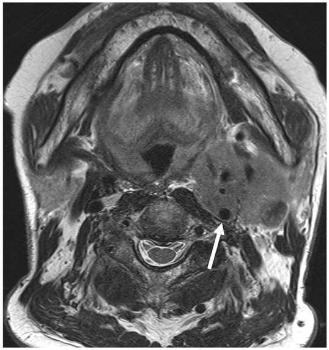

750 — Hạch cổ I–VII, ENE & NI-RADS / Neck nodes
Tags: pattern:hach-co vung:co score:NI-RADS
Mức chắc chắn (certainty): tổng hợp y văn (literature synthesis) — nhóm tự biên từ y văn mở, chưa gắn ca nguyên văn đơn lẻ.
1. Tổng quan — kích thước theo nhóm + gai mỡ mới là ENE thật
- Ngưỡng trục ngắn: nhóm II > 15 mm (cổ trên to sẵn), khác > 10 mm, Rouvière > 5–8 mm — TẠI SAO khác nhau: hạch phản ứng vùng II to sinh lý, sau hầu không có hạch lành to.
- iENE chuẩn 2024–2025 (0–3): 0 (không), 1 (gai mỡ + vỏ không đều đa mặt), 2 (dính mất mỡ + góc < 90°), 3 (xâm lấn cơ/da/mạch > 270°) — TẠI SAO bờ mờ đơn thuần KHÔNG đủ: kappa chỉ 0,2–0,6 (chủ quan!).
- NI-RADS sau điều trị: 1 (không nghi) → 4 (chắc chắn) — quyết định sinh thiết lại/xạ.
2. Gamut hạch cổ to (Gamut)
- Tròn + mất rốn + hoại tử + nhóm II: di căn — FNA + tìm nguyên phát (vòm/hạ họng!).
- Gai mỡ + dính + > 270° ĐMC: ENE 1–3 — hóa-xạ + mổ (AJCC 9!).
- Chuỗi hạt + lao/HIV + vôi: lao — GenXpert, đừng mổ!
- Sau điều trị + NI-RADS 1: theo dõi (đừng sinh thiết oan!).
3. Bảng so sánh phân biệt (ma trận đối chiếu)
| Thực thể (entity) | Hình ảnh điển hình | Chốt vào (rule-in) | Chốt loại (rule-out) | Gợi ý xác nhận |
|---|---|---|---|---|
| Di căn | Tròn + mất rốn + hoại tử + nhóm II-VI | Kích thước nhóm + hoại tử | Rốn mỡ + bầu dục → phản ứng | FNA + nguyên phát |
| ENE 1–3 | Gai mỡ + dính + > 270° mạch | Đa mặt + xâm lấn + AJCC 9 | Bờ mờ đơn thuần → chưa đủ | Hóa-xạ + mổ |
| Lao hạch | Chuỗi + vôi + hoại tử + lao phổi | GenXpert + vôi + trẻ | Gai mỡ + nguyên phát → di căn | Kháng lao |
| NI-RADS sau trị | 1: sạch; 4: chắc chắn | So sánh nền + PET | Viêm sau xạ → 2 | Sinh thiết khi 3–4 |

Thay thế cấu trúc + mất ranh giới (mũi tên). Nguồn: Lee et al., J Korean Soc Radiol 2026 Fig. 5, CC BY-NC 4.0.4. Protocol hạch cổ
- CT/MRI + siêu âm + FNA + PET khi hạch to; NI-RADS sau điều trị 8–12 tuần.
flowchart TD
A[Hạch cổ to] --> B{Kích thước nhóm?}
B -->|Vượt ngưỡng| C{ENE?}
C -->|Gai/dính/>270| D[Di căn ENE: hóa-xạ]
C -->|Không| E[FNA + nguyên phát]
5. Cạm bẫy
- Bờ mờ = ENE quá đà (kappa thấp!) — gai mỡ đa mặt mới chốt.
- Rosenmüller không đều sinh lý tưởng u vòm — đối xứng + không lan mới là thường.
- FDG vòng Waldeyer + cơ thanh quản bù tưởng tái phát — sinh lý + liệt đối bên là chốt.
6. Tự lượng giá — Blind Quiz
Ca 1 — K hạ họng + hạch cổ. Đọc MRI.
- Hỏi: ENE độ mấy? Đổi giai đoạn và điều trị không?
Bấm để hiện đáp án
- Dấu hiệu (findings): khối hạch bao ĐMC trong > 270° + mất cấu trúc.
- Chẩn đoán (diagnosis): iENE độ 3 — hóa-xạ (AJCC 9: cN thay đổi, không mổ đơn thuần!).
- Nguồn: Lee et al., Fig. 5, CC BY-NC 4.0.
Ca 2 — Hạch II 12 mm bầu dục + rốn mỡ còn: bệnh lý không? (Bảng mục 3.)
Bấm để hiện đáp án
- Phản ứng: nhóm II < 15 mm + rốn mỡ — theo dõi (không FNA vội).
Bài liên quan chéo
- 700 – Tổng quan Đầu Cổ
- 230 – Tuyến giáp (hạch giáp)
- 740 – Tuyến nước bọt (xâm lấn tuyến)
Không dùng để chẩn đoán độc lập khi chưa có người hướng dẫn.